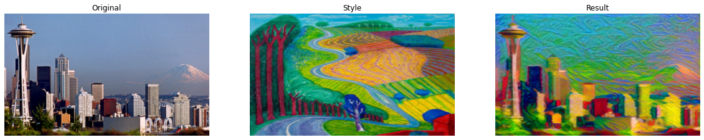
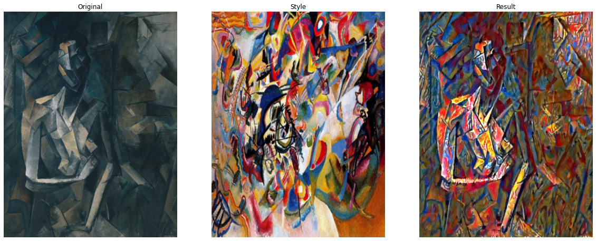
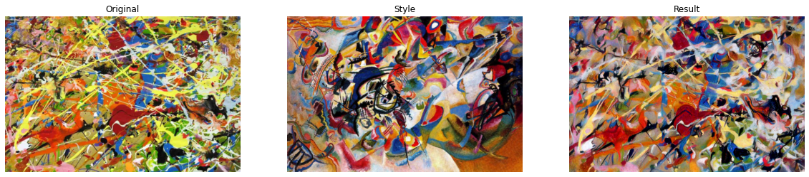
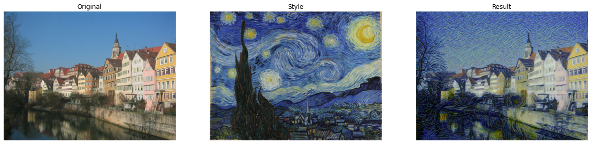
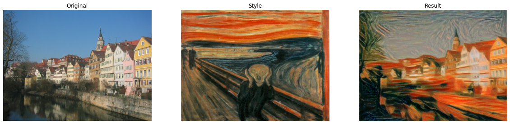
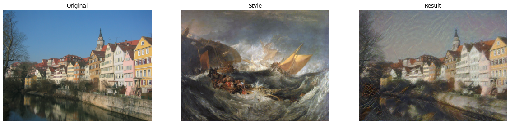
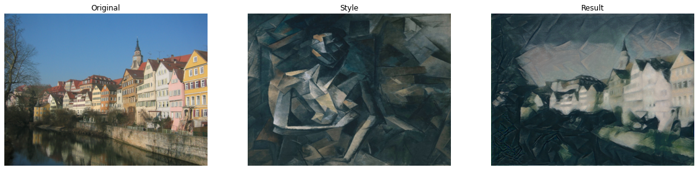
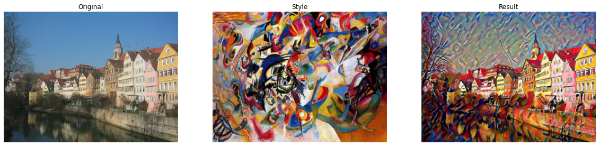
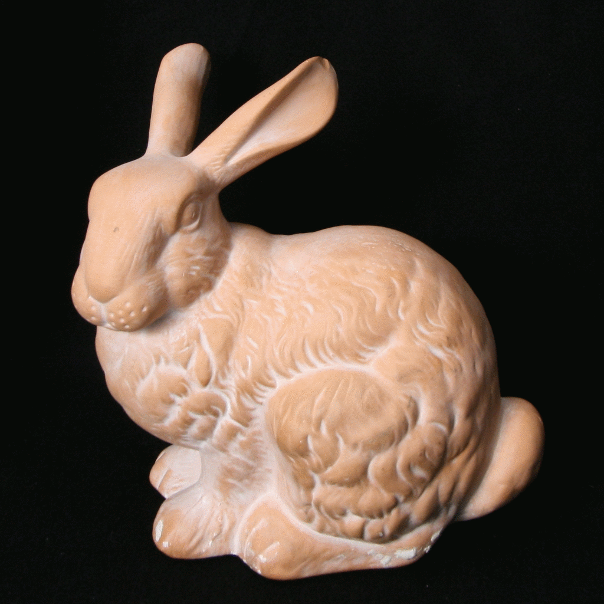
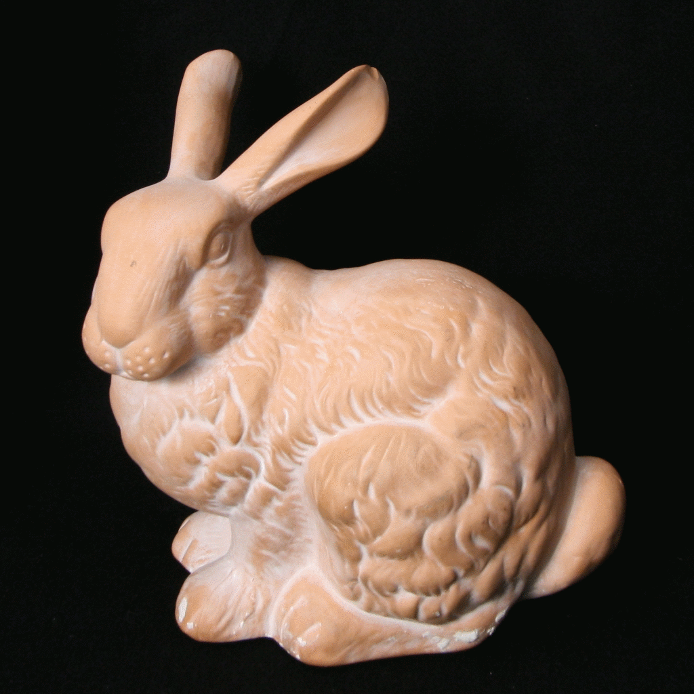

Overview
In this part, we reimplement neural style transfer discussed in this paper, where we take in a content image and a style image and output a blended image painted in the style of the style image but still keep the content of the content image.
Method
We use the same architecture and method as proposed in the paper. The VGG19 netwrok is used to extract feature information from the images. The style representations are from layer Conv1_1, Conv2_1, Conv3_1, Conv4_1, and Conv5_1, while the content representation is from layer Conv4_2 of the original VGG network.
Model Architecture (VGG19)
Sequential(
(0): Conv2d(3, 64, kernel_size=(3, 3), stride=(1, 1), padding=(1, 1))
(1): ReLU(inplace=True)
(2): Conv2d(64, 64, kernel_size=(3, 3), stride=(1, 1), padding=(1, 1))
(3): ReLU(inplace=True)
(4): MaxPool2d(kernel_size=2, stride=2, padding=0, dilation=1, ceil_mode=False)
(5): Conv2d(64, 128, kernel_size=(3, 3), stride=(1, 1), padding=(1, 1))
(6): ReLU(inplace=True)
(7): Conv2d(128, 128, kernel_size=(3, 3), stride=(1, 1), padding=(1, 1))
(8): ReLU(inplace=True)
(9): MaxPool2d(kernel_size=2, stride=2, padding=0, dilation=1, ceil_mode=False)
(10): Conv2d(128, 256, kernel_size=(3, 3), stride=(1, 1), padding=(1, 1))
(11): ReLU(inplace=True)
(12): Conv2d(256, 256, kernel_size=(3, 3), stride=(1, 1), padding=(1, 1))
(13): ReLU(inplace=True)
(14): Conv2d(256, 256, kernel_size=(3, 3), stride=(1, 1), padding=(1, 1))
(15): ReLU(inplace=True)
(16): Conv2d(256, 256, kernel_size=(3, 3), stride=(1, 1), padding=(1, 1))
(17): ReLU(inplace=True)
(18): MaxPool2d(kernel_size=2, stride=2, padding=0, dilation=1, ceil_mode=False)
(19): Conv2d(256, 512, kernel_size=(3, 3), stride=(1, 1), padding=(1, 1))
(20): ReLU(inplace=True)
(21): Conv2d(512, 512, kernel_size=(3, 3), stride=(1, 1), padding=(1, 1))
(22): ReLU(inplace=True)
(23): Conv2d(512, 512, kernel_size=(3, 3), stride=(1, 1), padding=(1, 1))
(24): ReLU(inplace=True)
(25): Conv2d(512, 512, kernel_size=(3, 3), stride=(1, 1), padding=(1, 1))
(26): ReLU(inplace=True)
(27): MaxPool2d(kernel_size=2, stride=2, padding=0, dilation=1, ceil_mode=False)
(28): Conv2d(512, 512, kernel_size=(3, 3), stride=(1, 1), padding=(1, 1))
(29): ReLU(inplace=True)
(30): Conv2d(512, 512, kernel_size=(3, 3), stride=(1, 1), padding=(1, 1))
(31): ReLU(inplace=True)
(32): Conv2d(512, 512, kernel_size=(3, 3), stride=(1, 1), padding=(1, 1))
(33): ReLU(inplace=True)
(34): Conv2d(512, 512, kernel_size=(3, 3), stride=(1, 1), padding=(1, 1))
(35): ReLU(inplace=True)
(36): MaxPool2d(kernel_size=2, stride=2, padding=0, dilation=1, ceil_mode=False)
)Hyperparameter:
Iteration for training the network: 5000
Adam optimizer with learning rate of 0.003
Content loss weight (alpha) = 1
Style loss weight (beta) = 1e6
Show Result
In this section, we choose several different content images and style images. Based on our trained model, we presents their style transfer result. First two of the results are fantastic style transfer examples, but the last pair doesn't seem to work.
We suspect that there are two reasons why it fails. First, the highly correlated style that content image and style image share. To provide with some background information, both of the images in the last pair are from abstract art genre. Their style are rather comlicated and abstract even for a human to describle, not to mention a neural algorithm. Moreover, their content seem to be both meaningless and confusing. Human recognize a image by identifying the content in the image. Thus, if the content in the first place is unrecognizable, the content certainly will be even harder to measure in the transfered result.
Successful style transfer 

The failed style transfer

Transfer Neckarfront to different styles
Here, we transfer the Neckarfront to 6 styles as illustrated in the paper. It is clear that all Neckarfront content are still visible in the final result with some styles from the original style image. However, the style transformation is not as dramatic as shown in the paper. One reason could be the short training iteration in our implementation. If we train the model longer, the style of the final result will be closer to the style image.






 
